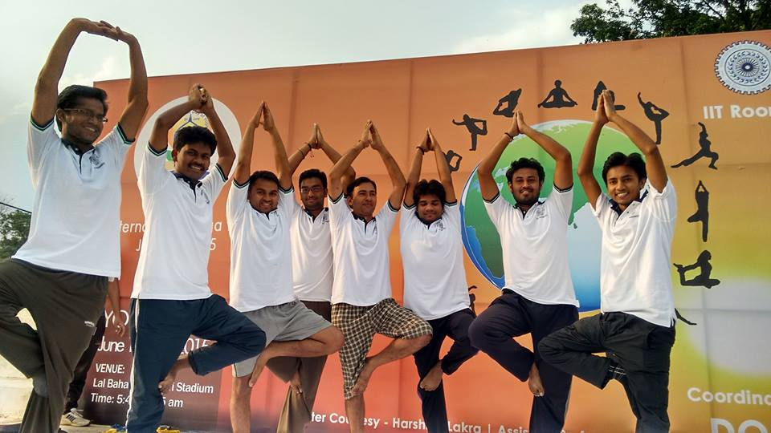
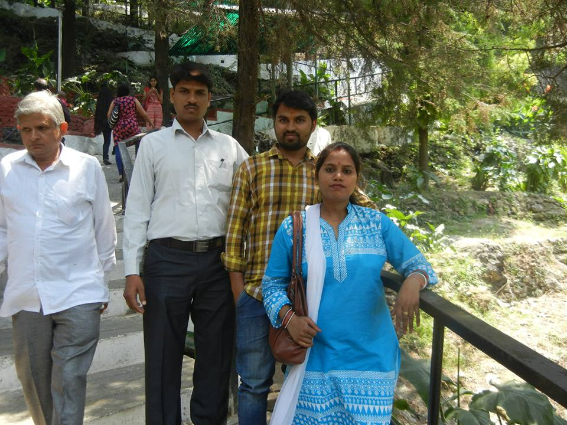
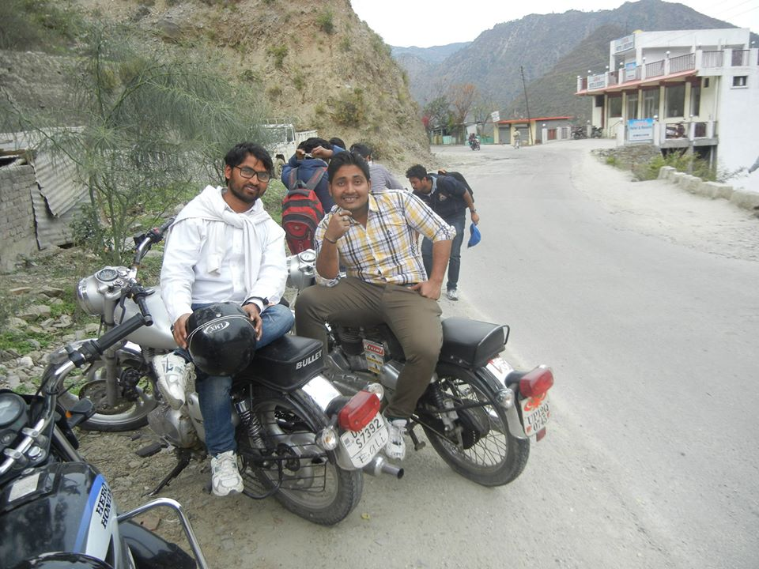
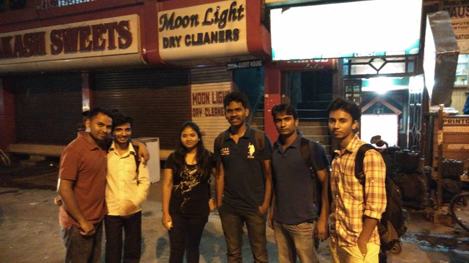
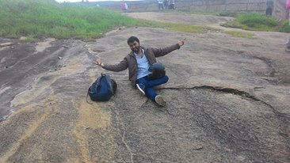

It was one of those perfect southern California afternoons, the sun peeking through a thick grove of trees, the air just a touch autumnal. I was eating lunch with the novelist TC Boyle in the backyard of his Frank Lloyd Wright–designed house in Montecito, the posh enclave of Santa Barbara in California where he has lived for more than two decades, raising three children with his wife of 42 years. His black puli, Ilka, played happily on the deck. “It’s quite clear to me that our species is on the way out,” Boyle said casually, as if the scene had grown just a little too suburban. It is the novelist’s job, after all, to jostle us out of our comforts, while being entertaining – that is, to make discomfort pleasurable.
Welcome to my website
Vijay pal is post graduated
The sunny tranquillity of southern California seemed like the wrong setting for fantasies of the apocalypse. Then again, no place may be more aware of its precariousness than this state blessed by so much bounty and fraught with so much danger. In the north, wildfires were burning. Earlier that day, I had driven past Lake Cachuma, which Boyle pointed out was at only about 10 percent capacity because of California’s years-long drought. And there was going to be an earthquake. Probably a tsunami too, with the occasional mudslide and windstorm to keep things interesting. “It looks pretty damn grim to me,” Boyle said as we popped cubes of salty cheese into our mouths and sipped our carbonated water. “Maybe we better get some colonies going real fast.”
Man in the Netherlands euthanised due to his alcohol addiction
New £5 notes contain animal fat and people are outraged
Thousands of Nigerian fisherman sue Shell for destroying communities
Slip away to the ski resorts of Innsbruck this winter
Unlike some literary predecessors, who believed drugs or alcohol heightened their creative powers, Boyle will write only when sober. His primary intoxicant when working at his desk is music, either classical or jazz. He left home for the State University of New York at Potsdam. “I went there for music school,” he said. “But I flunked my audition.” Things didn’t get much better for the self-described “poor undergrad” until his junior year, when Boyle “blundered into a creative writing classroom – and that kind of lit me up”.
 Unlike some literary predecessors, who believed drugs or alcohol heightened their creative powers, Boyle will write only when sober. His primary intoxicant when working at his desk is music, either classical or jazz. He left home for the State University of New York at Potsdam. “I went there for music school,” he said. “But I flunked my audition.” Things didn’t get much better for the self-described “poor undergrad” until his junior year, when Boyle “blundered into a creative writing classroom ”.
Unlike some literary predecessors, who believed drugs or alcohol heightened their creative powers, Boyle will write only when sober. His primary intoxicant when working at his desk is music, either classical or jazz. He left home for the State University of New York at Potsdam. “I went there for music school,” he said. “But I flunked my audition.” Things didn’t get much better for the self-described “poor undergrad” until his junior year, when Boyle “blundered into a creative writing classroom ”.
Unlike some literary predecessors, who believed drugs or alcohol heightened their creative powers, Boyle will write only when sober. His primary intoxicant when working at his desk is music, either classical or jazz. He left home for the State University of New York at Potsdam. “I went there for music school,” he said. “But I flunked my audition.” Things didn’t get much better for the self-described “poor undergrad” until his junior year, when Boyle “blundered into a creative writing classroom – and that kind of lit me up”.
Permanent Address:
Village Rougawn Post Makanpur Kanpur Nagar uttar Pradesh Pin: 209202
Correspondance Address:
H.N. 4048 19th main 4rth cross HAL 2nd Stage Indranagar Bangalore ,Karanatka Pin: 560038
If anyone want to contact me for the study material then have to contact me with the following numbers only
Contact No: 94567876205
Contact No: 9738315302